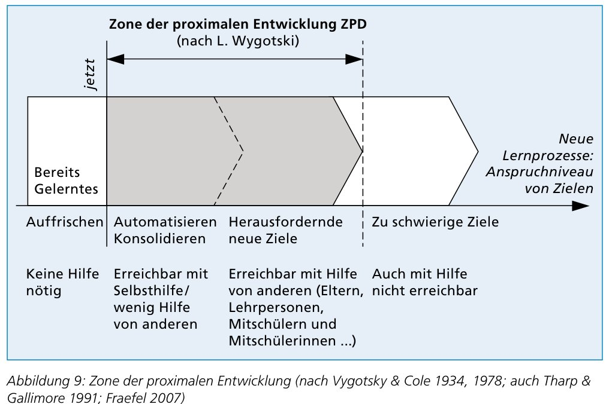
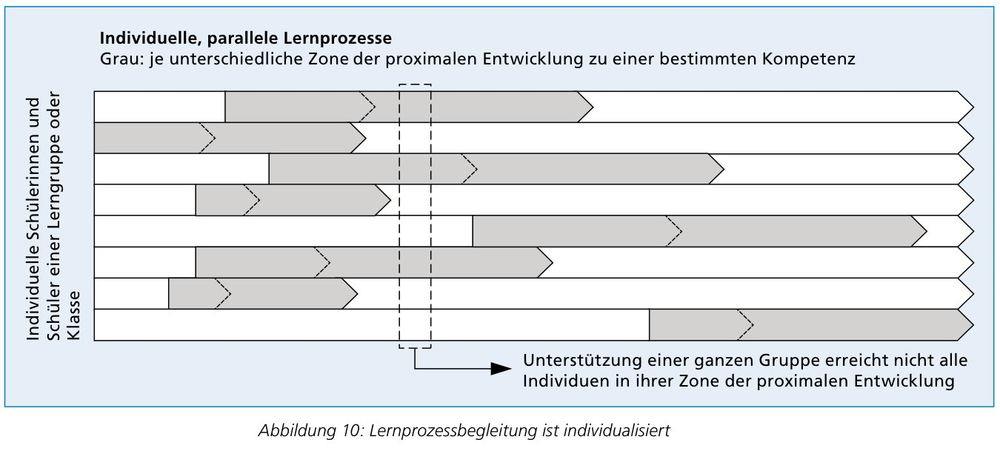

Home › Pedagogia › Accompagnare i processi di apprendimento
Pedagogia · Tema
Accompagnare i processi di apprendimento
Cosa dice la ricerca? Teorie e concetti, collegamenti, campi di tensione e possibilità di azione per la pratica.
Di cosa si tratta
Gli allievi di una classe non si trovano mai tutti allo stesso punto. Accompagnare individualmente l'apprendimento significa rendere visibili i percorsi di pensiero e le condizioni di apprendimento, adattarvi il sostegno e verificare se gli allievi progrediscono nella materia e nella loro autoregolazione.
Questa pagina collega teorie centrali – dalla zona di sviluppo prossimale di Vygotskij allo scaffolding, al feedback e all'apprendimento autoregolato – con modelli di colloquio, strumenti e una checklist per la pianificazione. Puoi leggerla dall'inizio alla fine oppure saltare alle singole sezioni tramite l'indice.
Il riflesso è spiegare subito o mostrare la soluzione. La ricerca sull'accompagnamento dell'apprendimento consiglia un passaggio intermedio: prima capire, poi dosare l'aiuto in modo adeguato.
Filo del ragionamento · tre domande prima di ogni aiuto
Dove esattamente si blocca? Contenuto, strategia, motivazione, emozione o ambiente? → Diagnosi
3
Qual è l'aiuto più piccolo che fa progredire?→ Scaffolding
Idea guida
L'accompagnamento individuale dell'apprendimento rende visibili i percorsi di pensiero e le condizioni di apprendimento, vi adatta il sostegno e verifica se gli allievi progrediscono nella materia e nella loro autoregolazione.
Come leggere questa pagina
La pagina è divisa in quattro parti: A Di cosa si tratta? · B Cosa devo capire? · C Come procedo? · D Dove diventa difficile? Tramite l'indice puoi saltare in qualsiasi momento alla sezione desiderata.
TeoriaRagionamentoCampo di tensionePratica
Tutte le affermazioni si basano sulle fonti indicate nella bibliografia. Le note con «sintesi propria» combinano più fonti. Le figure originali sono contrassegnate come citazioni di immagini e vengono discusse nel testo; tutte le altre grafiche sono rappresentazioni proprie, create con l'aiuto di Claude.ai o ChatGPT. Le citazioni da fonti in lingua tedesca sono state tradotte in italiano.
Panoramica
Come i concetti si collegano tra loro
Le teorie provengono da tradizioni diverse: psicologia dello sviluppo, ricerca sull'insegnamento e sull'apprendimento, pedagogia speciale, consulenza e didattica costruttivista. Ma si incastrano l'una nell'altra. Clicca su un concetto per saltare direttamente alla sezione corrispondente.
Rappresentazione propria.
ADi cosa si tratta?Definizione, fasi e caratteristiche dell'accompagnamento del processo di apprendimento
A · Definizione
Accompagnare il processo di apprendimento: una fase dell'intero processo
L'accompagnamento dell'apprendimento avviene ovunque le persone imparino da altri. A scuola indica una fase specifica, inserita in un processo di apprendimento completo (Fraefel, 2018, pag. 126).
avviareproblema, input, obiettivo di apprendimento, attività
accompagnarefeedback, aiuto sul contenuto, indicazioni sul procedimento, trasmettere strategie
concludere / valutarenuove sfide, valutazione
Rappresentazione propria secondo Fraefel, 2018, pag. 126.
Quadro concettuale
Il decorso tipico assomiglia a un apprendistato (cognitive apprenticeship; Collins, Brown & Newman, 1989): all'inizio si mostra e si sostiene molto; con la crescente familiarità serve sempre meno sostegno diretto.Fraefel, 2018, pag. 126
Chi colma il divario?
Gli allievi possono aumentare il loro impegno e usare strategie più efficaci. Possibile ma indesiderato: annacquare o abbandonare gli obiettivi. I docenti possono fissare obiettivi adeguati e stimolanti e sostenere con feedback e strategie.Fraefel, 2018, pag. 126
Filo del ragionamento
L'accompagnamento dell'apprendimento ha un obiettivo: rendersi superfluo. Karlen usa un'immagine: all'inizio del viaggio di apprendimento serve una pilota; con il tempo gli allievi prendono loro stessi il timone.Karlen, 2026, pag. 16
A · Caratteristiche
Quattro caratteristiche di un buon accompagnamento
Urban Fraefel descrive quattro caratteristiche. Insieme spiegano perché l'accompagnamento dell'apprendimento è impegnativo e perché deve essere possibile in ogni forma di insegnamento.
1
individualizzato
Gli allievi hanno prerequisiti diversi e hanno bisogno di un sostegno diverso. Con l'intera classe l'accompagnamento è quindi molto più difficile.
2
scaffold & feedback
I docenti sostengono con impalcature che colmano il divario tra le capacità attuali e l'obiettivo di apprendimento.
3
presuppone la diagnosi
Scaffold utili richiedono una buona conoscenza dei processi di apprendimento in corso: devono adattarsi a livello, difficoltà e bisogni.
4
indipendente dal metodo
Un buon accompagnamento è possibile con ogni metodo, dal direttivo all'aperto, purché possano avvenire interazioni individuali.
Fraefel, 2018, pagg. 128–129
Ragionamento · Cosa segue dalla caratteristica 4?
Che gli allievi vengano accompagnati non dipende dalla forma di insegnamento. Un piano settimanale o un atelier di apprendimento non è ancora accompagnamento, e un input guidato dal docente non lo esclude. Decisivo è se sono pianificati tempo e occasioni per l'interazione individuale. → SRL non è SOL
[Gli scaffold sono] sostegni che aiutano le allieve e gli allievi a colmare il divario tra le capacità attuali e gli obiettivi di apprendimento perseguiti.Fraefel, 2018, pag. 128 (cfr. Wood, Bruner & Ross, 1976)
BCosa devo capire?Teorie e concetti che fondano l'accompagnamento dell'apprendimento
B · Teoria quadro
Il sapere nasce prima nel sociale: la zona di sviluppo prossimale
Lev Vygotskij (1896–1934) constatò che nello sviluppo di un bambino tutto avviene prima sul piano sociale, prima di prendere forma all'interno. Le funzioni mentali superiori si basano su relazioni reali tra persone (Fraefel, 2018, pag. 127).

Citazione di immagine · Fraefel (2018), Lernprozesse begleiten, fig. 9, pag. 127 (secondo Vygotsky & Cole 1934/1978; Tharp & Gallimore 1991; Fraefel 2007). Le scritte nella figura sono in tedesco.
Cos'è la ZSP?
La zona di sviluppo prossimale, detta anche «finestra di apprendimento», è la distanza tra ciò che una persona può raggiungere da sola e ciò che riesce a padroneggiare con una guida o con pari più capaci. Per un certo tempo, chi apprende e chi è più avanti agiscono insieme.Fraefel, 2018, pag. 127, secondo Vygotsky & Cole (1934/1978, pag. 86)
Filo del ragionamento
La ZSP non è una caratteristica della persona, ma descrive il rapporto tra persona, compito e aiuto disponibile. Lo stesso compito può significare «consolidare» per una persona ed essere «troppo difficile» per un'altra. L'aiuto funziona solo nella zona grigia.
Le quattro aree della figura
Già appresorinfrescare · nessun aiuto necessario
Consolidareautomatizzare · raggiungibile con autoaiuto o poco aiuto
Nuovi obiettivi sfidantiraggiungibili con l'aiuto di altri: docente, genitori, pari
Obiettivi troppo difficilinon raggiungibili nemmeno con aiuto
Pratica · Sec I / Sec II
Nella comprensione di un testo impegnativo, una persona ha bisogno di un chiarimento dei termini, un'altra di un suggerimento sulla struttura, una terza è già pronta per un compito di transfer. Anche allievi più grandi possono aver bisogno di una guida stretta in un nuovo ambito disciplinare.Guida al workshop SitKo, pag. 4 (sintesi propria)
B · Finestre di apprendimento individuali
Una classe, tante finestre di apprendimento

Citazione di immagine · Fraefel (2018), Lernprozesse begleiten, fig. 10, pag. 128. Ogni riga è una persona che apprende, in grigio la sua finestra di apprendimento per la stessa competenza. Il rettangolo tratteggiato rappresenta un sostegno rivolto all'intero gruppo.
Qualunque cosa faccia il docente, raggiungerà solo una parte degli allievi […].Fraefel, 2018, pag. 128
Insegnamento adattivo
Helmke & Weinert (1997) definiscono l'insegnamento adattivo «il concetto didattico più promettente» per rispondere a differenze grandi e stabili tra gli allievi. L'adattività nasce dall'organizzazione dell'insegnamento (p.es. postazioni, lavoro su piano) o dall'adattamento situazionale nel momento.Leuchter & Schwerzmann Humbel, in Berner, Fraefel & Zumsteg, 2018, pag. 134
Ragionamento · tre conclusioni
1
Individualizzare significa reagire al livello di apprendimento. Non è un'etichetta per una forma di insegnamento.
2
Chi vuole agire in modo adattivo deve prima sapere a che punto si trova la persona.
3
La pianificazione richiede finestre di tempo per l'interazione individuale e compiti per gli altri.
Domanda guida per la pianificazione
Chi raggiunge l'aiuto che ho pianificato, e chi ha bisogno di un impulso diverso? Descrivi due allievi con conoscenze pregresse diverse e progetta un sostegno per ciascuno.Guida al workshop SitKo, pag. 3
B · Scaffolding
Promuovere, sostenere, lasciar andare
Un'impalcatura (ingl. scaffold) ha senso solo finché l'edificio ne ha bisogno. Gli aiuti devono rendere la sfida affrontabile senza sostituirsi al processo di pensiero, e vengono ritirati man mano che cresce la sicurezza.
Rappresentazione propria.
Cosa fa parte dello scaffolding
Strutturazione che riduce la complessità
Aiuti a focalizzarsi sugli aspetti importanti
Stimoli al pensiero, segnalare questioni aperte e contraddizioni
Invitare a condividere e verificare le proprie ipotesi
Invitare a motivare le affermazioni e a riflettere sui percorsi di apprendimento
Riassumere ed evidenziare i contributi importanti
Möller (2006), in Berner, Fraefel & Zumsteg, 2018, pag. 137
L'insegnante dovrebbe offrire tanto aiuto quanto necessario e il meno aiuto possibile […].Möller (2006) secondo Reiser (2004), in Berner, Fraefel & Zumsteg, 2018, pag. 137
Campo di tensione
Möller ritiene ingenuo credere che agire e sperimentare da soli portino a un sapere compreso. Le forme di apprendimento aperte e per scoperta riescono solo con un sostegno adeguato (pag. 137).
Pratica · graduare gli aiuti (sintesi propria)
Per lo stesso compito preparare da tre a quattro aiuti, dal più piccolo al più grande. Offrire prima il più piccolo.
1
Domanda di ritorno
«Cosa hai già provato?»
2
Suggerimento di focus o strategia
«Guarda prima la sezione 2.»
3
Modellare un passaggio
mostrare pensando ad alta voce
4
risolvere insieme
poi un compito simile da soli
Domanda di verifica: da cosa riconosco che un aiuto può essere ritirato?
secondo la guida al workshop SitKo, pagg. 4 e 11; Möller (2006)
B · Diagnosi e sostegno
Capire prima di aiutare
Tönnissen, Link, Hengartner & Hagmann-von Arx (2024) hanno osservato nella formazione che il processo diagnostico viene spesso saltato, passando direttamente al sostegno. La loro risposta è un ciclo a forma di «otto sdraiato».
Ciclo della diagnosi
Domanda, eventualmente ipotesi
Scegliere i metodi
Applicare, valutare
Rispondere alla domanda
Interpretare alla luce della teoria
Ciclo del sostegno
Dare priorità ai bisogni di sviluppo
Formulare obiettivi
Derivare misure per la persona e per l'insegnamento
Pianificare il sostegno
Attuare
Valutare l'effetto → ritorno alla diagnosi
Rappresentazione propria semplificata sulla base del ciclo diagnosi-sostegno (Tönnissen et al., 2024, pagg. 304–307). La figura originale non è riprodotta.
Corrispondenza invece di deficit
Le difficoltà di apprendimento e di comportamento vengono intese come problema di corrispondenza tra prerequisiti individuali, attività e partecipazione, e fattori ambientali (p.es. qualità dell'insegnamento).Tönnissen et al., 2024, pag. 305
Due strategie di sostegno
rimediale: costruire direttamente nella persona i prerequisiti mancanti compensatoria: adattare l'insegnamento ai bisognisecondo Trautmann & Wischer (2007), in Tönnissen et al., 2024, pag. 307
… anche i silenziosi, i ritirati, gli ansiosi […], che possono essere anch'essi molto sotto pressione, ma ricevono spesso poca attenzione …Ahrbeck (2022, pag. 260), citato in Tönnissen et al., 2024, pag. 310
Transfer nella classe regolare
Il modello proviene dalla pedagogia speciale e non sostituisce una diagnostica specialistica. Come schema di pensiero aiuta comunque: prima formulare una domanda, poi osservare; non chiedersi solo «cosa manca al bambino?», ma anche «cosa rende difficile l'insegnamento?».
Critica delle autrici e degli autori stessi
Il modello sembra lineare. Nella pratica si torna indietro, e gli allievi possono trovarsi in punti diversi per aspetti diversi (pag. 310).
Pratica
L'osservazione è considerata la «disciplina regina» della diagnostica (pag. 306). Entra in ogni azione pedagogica.
B · Valutazione formativa
Conoscere il livello di apprendimento senza esaminare
L'assessment diventa formativo solo quando queste informazioni vengono usate in modo da migliorare l'insegnamento a favore delle allieve e degli allievi.Fraefel, 2023, pag. 138, secondo Black & Wiliam (1998)
Filo del ragionamento
Formativo non è un metodo, ma un uso. Un'informazione sul livello di apprendimento senza conseguenze è raccolta di dati. Quindi: chiedere solo se è previsto il tempo per una reazione.
Uno spettro: dall'informale al valutato con nota
A · informale
colloqui, osservazione, esaminare i prodottisempre · per gli allievi
B · sondare la classe
brevi sondaggi scritti (CAT)secondo necessità · per il docente
C · verificare senza nota
test, prodotti, competenze dimostratepiù volte per unità
D · verificare con nota
formale, a condizioni equeal massimo una volta per unità
A e B: formative assessment di processo e progresso · C e D: valutazione sommativa. Rappresentazione propria semplificata secondo Fraefel, 2023, tab. 8, pag. 137 (sulla base di Dolin et al., 2017).
✗ Cosa di regola non funziona
«Avete capito?» Gli allievi spesso non sanno nemmeno cosa non hanno capito.
Alzare la mano, semaforo, pollici: informazione binaria minima, un vago umore generale.
Questionari a crocette: statistica senza conseguenze chiare.
Brevi test: ricordano gli esami e creano pressione.
Fraefel, 2023, pag. 139
Cosa fornisce indicazioni sostanziose
«Assessment on the fly»: osservare, fare domande, esaminare i prodotti
Il punto più confuso: «Qual è stato il punto più confuso di questa lezione?» (per iscritto, breve)
Non in modalità esame: autovalutazione su comprensione e difficoltà
Cassetta anonima per disagi, lodi, desideri
Fraefel, 2023, pagg. 138–140 (CAT secondo Angelo & Cross, 1993)
Dilemma per chi inizia la professione
I riscontri della classe possono richiedere di adattare subito ritmo, procedimento o spiegazioni. Questo significa più lavoro e incertezza. Fraefel consiglia di chiedere solo quando resta abbastanza tempo per ripensare il percorso (pag. 140).
B · Feedback
Un feedback che permette di continuare ad apprendere
Il feedback è un'informazione su aspetti del saper fare o della comprensione di una persona, data da docenti, pari, testi o da sé stessi (Hattie & Timperley, 2007). È efficace quando colpisce il livello giusto e pone le domande giuste (Fraefel, 2018, pag. 129).
Verso dove?chiarire gli obiettivi
Come va?stato, problemi, progresso
E dopo?prospettive, prossimi passi
Compitolivello del contenuto
È chiaro cosa va fatto e a quale scopo?chiarire perché ne vale la pena
Riescono nel compito? Dov'è il problema di contenuto?correzione sul contenuto, suggerimenti
Come si può applicare, ampliare quanto appreso?mostrare un compito di applicazione
Strategieriferite al compito
Quali strategie vanno apprese qui?discutere perché ci si blocca ripetutamente
Come vengono applicate e ottimizzate le strategie?proporre un procedimento di autocorrezione
A cosa abilita la strategia? Prossimi passi?esercitarsi su un problema più impegnativo
Autoregolazionemonitorare, dirigere
Quali passi verso più autoregolazione servono?p.es. cercare aiuto attivamente
L'autoregolazione adeguata riesce?mostrare dove fallisce la ricerca di aiuto
Cosa permette ancora più autonomia?scoprirlo insieme
Personasolo con riferimento!
L'affermazione contiene informazioni che aiutano a fare meglio in futuro?Lodi o critiche senza riferimento al compito o alla strategia sono praticamente inefficaci.
Rappresentazione propria semplificata secondo Fraefel, 2018, fig. 11, pag. 130 (secondo Hattie & Timperley, 2007). Tratteggiati: i due campi a cui si limita la maggior parte dei feedback quotidiani.
Riscontro dalla quotidianità scolastica
La maggior parte dei feedback riguarda solo due campi: stato e problemi del compito e osservazioni personali senza contenuto informativo. I feedback professionali usano anche obiettivi e seguiti nonché strategie.Fraefel, 2018, pag. 129
Collegamenti
ZSP: il feedback mostra il prossimo passo raggiungibile.
SRL: la riga «autoregolazione» è il ponte verso la turbina.
Formativo: il feedback agisce solo quando può essere usato.
Esercizio
Assegna un tuo feedback a un campo. Completalo con un prossimo passo verificabile e un'occasione per metterlo in pratica.Guida al workshop SitKo, pag. 5
Un esempio: dal commento al lavoro successivo
Un'allieva (Sec I/II) ha consegnato la prima bozza di un testo argomentativo. Gli argomenti sono buoni, ma giustapposti senza collegamenti. Ecco come può suonare il feedback ai diversi livelli (esempi propri per la matrice):
Tipico, poco utile
«Ben fatto, ma ancora un po' confuso.»
Persona e compito mescolati, nessuna informazione su cosa è confuso e come migliorare.
Compito
«I tuoi tre argomenti sono corretti. Mancano le transizioni che mostrano come sono collegati.»
Strategia
«Evidenzia in ogni paragrafo la frase chiave e scrivi accanto: sostiene, contraddice, integra?»
Autoregolazione
«Nel prossimo testo, come ti accorgerai da sola se il filo conduttore regge?»
Più si va a destra, più responsabilità resta alla persona che apprende.
Lodare le strategie, non il talento
Un feedback positivo orientato al processo («Hai scelto una buona strategia») rafforza l'autoefficacia nell'applicazione delle strategie.Karlen & Mejeh, 2026, pagg. 58–59
Prospettiva di sviluppo
Nel diario di apprendimento, Ruf & Gallin danno riscontri con spunte: ✓ raggiunto, ✓✓ prestazione autonoma e personale, ✓✓✓ «colpo da maestro». Se qualcosa non riesce, c'è una seconda possibilità.Ruf & Gallin, 2011, pagg. 46–47
Checklist per ogni feedback
La persona sa a che punto si trova?
Sa cosa fare come prossima cosa?
Ha tempo e occasione per usarlo?
Riguarda compito, strategia o autoregolazione, non solo la persona?
B · Apprendimento autoregolato
L'autoregolazione ha bisogno di accompagnamento
Definizione«L'apprendimento autoregolato indica la capacità di adottare, a seconda della situazione e del compito, diverse misure di preparazione, monitoraggio e regolazione, per raggiungere gli obiettivi desiderati con l'aiuto di strategie adeguate.»Karlen & Mejeh, 2026, pag. 43
Citazione di immagine · Karlen & Mejeh (2026), fig. 2.1: Il modello della turbina dell'apprendimento autoregolato, pag. 43 (sulla base di Karlen & Held, 2025). In: Karlen, Y. (a cura di), Gewusst wie! Le scritte nella figura sono in tedesco.
Come è costruita la turbina
1
Tre fasi (anello interno, secondo Zimmerman, 2000): preparazione → svolgimento → riflessione
2
Sei aspetti di competenza (anello esterno): cognizione, metacognizione, motivazione, emozioni, risorse, mindset, tutti ugualmente centrali
3
Obiettivo (centro): sentirsi efficaci, costruire relazioni, agire con responsabilità
Karlen & Mejeh, 2026, pagg. 42–46
Filo del ragionamento
Cognizione e metacognizione da sole non spiegano successo o insuccesso. Se qualcuno «non va avanti», la causa può stare anche nelle emozioni (paura di fallire), nelle risorse (rumore, cellulare, mancanza di tempo) o nel mindset («in matematica non sono proprio portata»). La turbina è quindi anche una griglia diagnostica.
Tre fasi, tre domande di accompagnamento
Preparazioneanalizzare il compito, attivare le conoscenze pregresse, fissare un obiettivo, scegliere una strategia, organizzare tempo e luogo, prepararsi mentalmente«Qual è il tuo piano?»
Svolgimentoapplicare le strategie, monitorare i progressi, mantenere la concentrazione, regolare frustrazione e sovraccarico, cercare aiuto«Da cosa ti accorgi che funziona?»
RiflessioneObiettivo raggiunto? Quali strategie hanno aiutato? Attribuire le cause, trarre conclusioni per la prossima volta«Cosa rifarai uguale la prossima volta?»
Rappresentazione propria secondo Karlen & Mejeh, 2026, pagg. 48–52 e tab. 2.1–2.2; domande di accompagnamento: formulazioni proprie.
Attribuzione: il motore nascosto
Chi riconduce il successo al proprio impegno e a strategie efficaci («Mi sono preparata bene») sviluppa una maggiore autoefficacia (Weiner, 1986). Nella riflessione vale quindi la pena chiedere il perché.Karlen & Mejeh, 2026, pagg. 51–52
Tre forme di conoscenza delle strategie
dichiarativa: cos'è una strategia procedurale: come si applica condizionale: quando e perché ha senso Serve inoltre la motivazione strategica: autoefficacia e convinzione che la strategia aiuti.Karlen & Mejeh, 2026, pagg. 56–58 (Pressley et al., 1987)
Costruire le strategie in modo mirato
introdurre passo dopo passo e modellare
esercitare su un contenuto disciplinare, rendere visibile l'utilità
coinvolgere gli allievi nella scelta
discutere esplicitamente il transfer ad altri compiti
Karlen & Mejeh, 2026, pagg. 56–59
B · Ostacoli all'uso delle strategie
«Semplicemente non applica la strategia.» Perché?
Karlen & Mejeh distinguono tre ostacoli tipici. Dall'esterno si vede in tutti lo stesso comportamento, ma ciascuno richiede un aiuto diverso. Prova l'albero decisionale con un caso concreto del tuo insegnamento.
La strategia riesce se la spieghi e chiedi esplicitamente di usarla?
Riesce su richiesta: sì
Perché non usa la strategia di propria iniziativa?
Deficit di mediazione
Mancano conoscenze necessarie o una capacità di base, perciò anche una spiegazione ben intenzionata resta senza effetto. Esempio: evidenzia tutto perché non sa ancora distinguere l'importante dal secondario.
Aiuto: chiarire le conoscenze pregresse, spiegare in dettaglio, modellare, esercitarsi insieme.
Deficit di produzione
Conosce e padroneggia la strategia, ma la usa solo su richiesta. Spesso non ci pensa o non ne vede l'utilità nella situazione concreta. Esempio: autospiegazioni solo se richieste esplicitamente.
Aiuto: impulsi regolari, promemoria mirati, situazioni di applicazione concrete, routine.
Deficit di utilizzo
Conosce la strategia e la sua utilità, ma lo sforzo le sembra troppo grande. Preferisce metodi più comodi e meno efficaci. Esempio: rileggere il testo invece di formulare domande proprie.
Aiuto: far sperimentare e riflettere l'utilità su un compito concreto, facilitare l'inizio.
Rappresentazione propria come albero decisionale secondo Karlen & Mejeh, 2026, pagg. 64–65.
Filo del ragionamento
Chi «rispiega subito» aiuta solo nel deficit di mediazione. Nel deficit di utilizzo, spiegare di più rafforza piuttosto l'impressione che la strategia sia faticosa.
Domanda guida
Manca la comprensione, manca l'uso autonomo o manca la disponibilità a investire lo sforzo? La cosa migliore è chiedere direttamente alla persona.Guida al workshop SitKo, pag. 7
B · Verificare convinzioni diffuse
Quattro convinzioni e cosa ne dice la ricerca
Clicca su una convinzione per vedere cosa dicono le fonti.
«Da noi c'è un atelier di apprendimento, quindi imparano in modo autoregolato.»È vero?
SOL non è SRL. L'apprendimento auto-organizzato è una forma di insegnamento con spazi di libertà. SRL sono le competenze necessarie per imparare con successo lì e nell'insegnamento tradizionale.Karlen & Mejeh, 2026, pag. 44
«Ha buoni voti, quindi sa studiare.»È vero?
Il successo scolastico non è un indizio affidabile che qualcuno abbia imparato a imparare. Alcuni sanno come superare gli esami, ma non come acquisire conoscenze a lungo termine. Al più tardi nei passaggi di livello iniziano a vacillare.Karlen, 2026, introduzione, pagg. 14–15
«Viene da sé con l'età.»È vero?
Nel passaggio al livello secondario l'uso delle strategie talvolta addirittura diminuisce, benché la conoscenza delle strategie cresca. Per il Sec II i risultati sono contrastanti. Un insegnamento mirato però promuove l'SRL.Karlen & Mejeh, 2026, pagg. 66–67
«Basta dare loro libertà.»È vero?
Richieste elevate di auto-organizzazione senza promozione delle strategie non rafforzano l'autoregolazione, ma generano frustrazione nell'apprendere.Karlen, 2026, introduzione, pag. 17
Promuovere l'SRL in modo globale
L'accompagnamento dell'apprendimento inizia con la diagnosi delle competenze SRL e si manifesta in impulsi strategici, scaffolding e feedback individuale. I singoli docenti possono iniziare in qualsiasi momento dai cerchi interni, anche senza un concetto a livello di scuola.Karlen, 2026, pagg. 15–16
Grafica: rappresentazione propria secondo Karlen, 2026, fig. E.1, pag. 16.
B · Apprendimento dialogico
Rendere visibili i percorsi di pensiero: il mondo del singolare
Citazione di immagine · Ruf & Gallin (2011), Dialogisches Lernen in Sprache und Mathematik, vol. 1, pag. 24. Sopra il mondo del regolare (domande e soluzioni degli esperti), sotto il mondo del singolare (l'io della persona che apprende). Le scritte nella figura sono in tedesco.
Ora non è richiesta l'arte di spiegare, ma l'arte di ascoltare.Ruf & Gallin, 2011, pag. 24
Idea centrale
Prima interessa ciò che accade tra la persona che apprende e la materia: conoscenze pregresse, domande, rappresentazioni, primi tentativi. Il docente mette per il momento da parte il suo sapere esperto. Solo nello scambio le posizioni singolari si avvicinano alle regolarità della disciplina.Ruf & Gallin, 2011, pagg. 24–25
Distanza: deficit o opportunità?
All'inizio, persona e materia sono molto distanti. Chi vuole superare questa distanza il più in fretta possibile svaluta il pensiero degli allievi. Chi la usa come campo di tensione ne ricava la dinamica dell'apprendimento (pag. 24).
Tracce di apprendimento, non solo prodotti finali
Il diario di apprendimento è un'officina: i testi nascono spontaneamente e non vengono corretti. Percorsi, deviazioni, domande e strategie diventano visibili. I riscontri interpretano queste tracce in una prospettiva di sviluppo.Ruf & Gallin, 2011, pagg. 46–47
Domande sulle tracce per un compito
Quale domanda ti è sorta?
Cosa hai provato?
Dove si blocca il tuo pensiero?
Quale riscontro ti aiuterebbe?
Guida al workshop SitKo, pag. 10
Collegamento
Il singolare è il luogo della diagnosi: ciò che gli allievi mostrano nel diario o nel colloquio rende visibile la loro zona di sviluppo prossimale. Apertura all'inizio non significa rinunciare alle esigenze disciplinari.
B · Atteggiamento
Abilitare invece di produrre
Chi insegna può istruire, ma il movimento di appropriazione dell'individuo che apprende segue schemi propri […].Arnold & Schön, 2019, pag. 53. L'essere umano è dunque «capace di apprendere, ma anche refrattario all'istruzione» (ibid., secondo Arnold & Siebert, 1995).
Didattica della produzione
lineare, etero-organizzata, prevedibile
accesso al sapere per interposta persona
pianificazione e controllo dei passi di insegnamento
insegnare, trasmettere, guidare
riproduzione di un sapere dato
Didattica dell'abilitazione
non lineare, auto-organizzata, aperta
accesso autonomo al sapere
accompagnamento di progetti di apprendimento
accompagnare, consigliare, sostenere
costruzione di un sapere riflessivo
Rappresentazione propria abbreviata secondo Arnold & Schön, 2019, tab. 10, pag. 54 (secondo Arnold & Pätzold, 2002). Il confronto è un modello di riflessione; nella pratica esistono forme miste (pag. 89).
Competenze di chi «abilita l'apprendimento»
Gestire l'incertezza: proprio nelle fasi incerte si sviluppano le dinamiche di appropriazione
Apertura agli esiti: gli effetti di apprendimento non si possono produrre con certezza
Secondo la teoria dell'autodeterminazione (Deci & Ryan), non è la forma organizzativa a decidere il successo dell'apprendimento, ma se un contesto rende esperibili competenza, autonomia e appartenenza sociale.Arnold & Schön, 2019, pag. 90
Importante
Anche la didattica dell'abilitazione non significa «lasciar correre»: gli allievi devono poter decidere da soli se hanno bisogno di istruzioni dettagliate. E hanno bisogno di feedback.Arnold & Schön, 2019, pag. 90
SPASS: cinque criteri per un apprendimento vivo e duraturo
Arnold riunisce cinque criteri come aiuto alla riflessione per la propria pianificazione (l'acronimo tedesco SPASS significa «divertimento»). Non sono una ricetta né una prova di efficacia, ma domande da porre alla propria offerta.
S
autodiretto
Gli allievi contribuiscono a definire i percorsi e verificano da soli i risultati. Il docente è responsabile del processo.
P
produttivo
Le conoscenze pregresse vengono integrate; spazio per curiosità e cambi di prospettiva.
A
attivante
compiti concreti; pianificare, eseguire e verificare da soli i percorsi di soluzione.
S
situazionale
riferimento alla situazione del gruppo; esempi pratici e transfer.
S
sociale
apprezzamento, tempo per domande e feedback, percepire le emozioni, cooperare.
Rappresentazione propria abbreviata secondo Arnold & Schön, 2019, tab. 22, pag. 108 (secondo Arnold, 2012a).
Responsabilità propria ≠ cedere la responsabilità
L'insegnante cede gradualmente decisioni didattiche, ma resta responsabile della propria offerta e verifica se essa amplia davvero le possibilità di azione degli allievi.Arnold & Schön, 2019, pag. 91
Agisci sempre in modo da aumentare il numero delle possibilità!Heinz von Foerster (1988), citato in Arnold & Schön, 2019, pag. 92
Esercizio sulla propria pianificazione
Scegli due criteri che la tua pianificazione già soddisfa e motivali con un'azione di apprendimento concreta. Aggiungi un terzo criterio e rifletti su quale accompagnamento richiede.Guida al workshop SitKo, pag. 12
B · Cosa serve ai docenti
L'accompagnamento è una competenza orchestrata
L'accompagnamento professionale dell'apprendimento nasce da più ambiti di competenza che si sovrappongono. Decisivo è quanto bene il docente sa orchestrarli secondo necessità (Fraefel, 2018, pag. 131).
Competenza didattico-disciplinare
contenuto e struttura dei compiti
difficoltà tipiche, tempo necessario
molteplici strategie di spiegazione
strategie di soluzione dei problemi
Competenza diagnostica
riconoscere il livello di apprendimento
riconoscere le difficoltà di apprendimento
riconoscere il potenziale di apprendimento
presuppone la didattica disciplinare
Competenza comunicativa e sociale
conoscenze psicologiche
conoscenze sul feedback
stabilire priorità
trovare il «tono» giusto
Competenza di accompagnamento del processo di apprendimento
fissare obiettivi adeguati e stimolanti
adattività; trovare il livello giusto
feedback corretti su compiti e strategie
riconoscere i livelli rilevanti
intervenire in modo linguisticamente adeguato
stimare l'effetto del feedback
Rappresentazione propria secondo Fraefel, 2018, fig. 12, pag. 131.
Standard di qualità (Canton Zurigo)
offerte di apprendimento differenziate
promozione individuale: rilevare regolarmente le prestazioni, rispondere costruttivamente ai percorsi di pensiero, dare riscontri differenziati
apprendimento autonomo: introdurre tecniche di studio, autovalutazione
collaborazione nel team, passaggi di livello curati
Bildungsdirektion Kanton Zürich (2017), in Berner, Fraefel & Zumsteg, 2018, pag. 136
Ragionamento per la formazione
All'inizio della professione non si può fare tutto insieme. Aiuta esercitare consapevolmente un ambito, p.es. per una settimana dare solo feedback sulle strategie, lasciando correre gli altri. Fraefel definisce volutamente l'accompagnamento un'attività complessa ed esigente.
CCome procedo?Colloqui, ciclo d'azione, strumenti e checklist di pianificazione
C · Il colloquio di accompagnamento
Strutturare un colloquio di accompagnamento: GROW
Un colloquio orientato alle soluzioni non è una chiacchierata piacevole in cui si perde di vista l'obiettivo, ma è chiaramente strutturato (Kremers & Schlüter, 2018, pag. 25). Il modello GROW di Whitmore lo articola in quattro fasi.
G
Goal · chiarire l'obiettivo
Fase di orientamento: contatto, tempi, richiesta
Qual è il tuo tema? Cosa dev'essere raggiunto alla fine?
R
Reality · situazione attuale
Fase di chiarimento, di solito la più lunga
Dove stanno esattamente i problemi? Cosa li ha causati?
O
Options · possibilità
Raccogliere e valutare idee di soluzione
Quali possibilità ci sono? Cosa parla a favore e contro ciascuna?
W
Will · piano d'azione
definire i prossimi passi concreti
Qual è per te il risultato? Quali sono i tuoi prossimi passi?
Rappresentazione propria secondo Kremers & Schlüter, 2018, pagg. 25–27 (GROW secondo Whitmore, 2006).
Chi è responsabile di cosa?
Docente (coach): del processo, cioè spazio, tempo, struttura, apprezzamento, orientamento alle risorse e buone domande. Allievo/a (coachee): del contenuto: il mio tema, il mio obiettivo, la mia soluzione, il mio prossimo passo.Kremers & Schlüter, 2018, pagg. 9–10
Consulenza in cinque fasi
Costruire la relazione
Concretizzare la richiesta dal punto di vista di chi apprende
Trovare il livello di consulenza e di soluzione
Dare impulsi, spezzare le abitudini
Concludere con un risultato concreto
Arnold & Schön, 2019, pag. 69 (secondo Brüggemann et al., 2014). Quasi identico a GROW, ma accentua il contatto.
Consigliare e valutare
Kremers & Schlüter consigliano di separare il più possibile consulenza e valutazione (pag. 25). Dove lo stesso docente fa entrambe: chiarire apertamente scopo e uso delle informazioni del colloquio. Arnold & Schön: la consulenza sta in tensione con l'autonomia (pag. 69).
Pratica · versione breve in classe (3–5 minuti)
G «Cosa vuoi finire oggi?» → R «Mostrami a che punto sei. Cosa hai già provato?» → O «Cosa potresti fare ora? Cos'altro?» → W «Cosa fai per primo? Quando ripasso a vedere?» Domanda di osservazione per le esercitazioni: si cerca prima di capire o si tira subito a indovinare? Il prossimo passo è concreto e condiviso dalla persona che apprende?condensazione propria secondo Kremers & Schlüter, 2018; domanda di osservazione: guida al workshop SitKo, pag. 9
C · Capire gli ostacoli all'apprendimento
Cosa c'è dietro «non ce la faccio»?
Kremers & Schlüter presentano un learning coaching con un'allieva che si dispera prima di ogni verifica. Il modello del processo di self-management separa quattro ambiti e rende così visibile che non si tratta solo di tecnica di studio.
1 · Situazione scatenante
La sera prima della verifica, dopo le 20 · il vicino con la musica alta · il fratello entra tre volte · il gruppo WhatsApp di studio continua a suonare · la scrivania piena di libri
2 · Emozione e corpo
rabbia verso me stessa · stanchezza, occhi che bruciano · disperazione: da dove comincio? · prima orgogliosa, ora paura di fallire
3 · Cognizione (pensieri)
«C'è una montagna di lavoro.» · «Non ce la farò mai.» · «In classe sembrava più facile.» · «Smetto solo quando lo so, anche se arriva mezzanotte.»
4 · Strategie finora
copiare, coprire, ripetere · studiare solo la sera prima · ricerche in internet, video · gruppo WhatsApp: scambio e distrazione insieme
Rappresentazione propria del caso secondo Kremers & Schlüter, 2018, pagg. 84–86 (abbreviato, parafrasato).
Risultato: il suo piano (Will)
cellulare e computer offline per la prima ora
piano di studio settimanale, iniziare prima, pianificare i ripassi
tappe intermedie chiare, dopo le quali posso smettere
visualizzare i termini tecnici invece di copiarli
Kremers & Schlüter, 2018, pagg. 84–85
Esperta di apprendimento ↔ esperta di sé stessa
Il docente ha bisogno di conoscenze sulle strategie di studio. Allo stesso tempo deve fidarsi che l'allieva scelga solo le soluzioni che può attuare in modo realistico e motivato. Se vuole studiare la sera, è la sua strada (pag. 85).
Collegamento con la turbina SRL
I quattro campi colgono esattamente gli aspetti che Karlen & Mejeh sottolineano oltre la cognizione: risorse (disturbi), emozioni (paura), mindset («non ce la farò mai») e cognizione (strategie poco efficaci). Il colloquio è diagnosi e sostegno insieme.
🌱Principio: rafforzare l'autoefficacia, evidenziare risorse e successi, incoraggiare e procedere a piccoli passi (Kremers & Schlüter, 2018, pag. 85).
C · Sintesi
Sei passi dell'accompagnamento
Le fonti si possono condensare in un ciclo d'azione (sintesi propria, secondo le idee guida della guida al workshop SitKo, pag. 1). Non è uno schema rigido: come nel ciclo diagnosi-sostegno, nella pratica si va avanti e indietro.
1 Capire prima di aiutare. Esplorare conoscenze pregresse, percorsi di pensiero, uso delle strategie, risorse e barriere; considerare la persona e le condizioni dell'insegnamento. → Diagnosi
2 Dosare il sostegno in modo adeguato. Adattare compiti e aiuti alla ZSP; ritirarli man mano che cresce la competenza. → Scaffolding
3 Tradurre il feedback in lavoro successivo. Chiarire obiettivo, livello e prossimo passo; toccare compito, procedimento e autoregolazione. → Feedback
5 Verificare l'effetto e correggere. Definire segnali osservabili di progresso e usare i risultati. → formativo
Al centro: coinvolgere gli allievi. Ascoltare, usare le tracce di apprendimento, chiarire le richieste, concordare insieme i passi. → Dialogo
C · Toolbox
Otto strumenti per la classe
Capire
Il punto più confuso
Alla fine di una sequenza, per iscritto: «Qual è stato il punto più confuso?» Esaminare le risposte e reagirvi nella lezione successiva.Fraefel, 2023, pag. 140
Capire
Domande sulle tracce
Aggiungere al compito: quale domanda ti è sorta? Cosa hai provato? Dove si blocca il tuo pensiero? Quale riscontro ti aiuta?Ruf & Gallin; guida SitKo, pag. 10
Dosare
Scala degli aiuti
Per un compito centrale, preparare da tre a quattro aiuti graduati: domanda, suggerimento, modellare, risolvere insieme. Iniziare sempre dal più piccolo.secondo Möller (2006); guida SitKo, pag. 4
Dosare
Check delle strategie
Se una strategia non viene usata: deficit di mediazione, produzione o utilizzo? → Albero decisionaleKarlen & Mejeh, 2026, pagg. 64–65
Feedback
Matrice del feedback
Assegnare i propri feedback a un campo. Mancano obiettivi, prospettive o strategie? Aggiungere un prossimo passo verificabile.Fraefel, 2018, pag. 130; guida SitKo, pag. 5
Autoregolazione
Tre domande di fase
Prima: «Qual è il tuo piano?» Durante: «Da cosa ti accorgi che funziona?» Dopo: «Cosa ha aiutato, cosa rifarai uguale?»secondo Karlen & Mejeh, 2026, pagg. 48–52
Colloquio
GROW in 5 minuti
Obiettivo → situazione attuale → opzioni → prossimo passo. Il docente guida il processo, la persona che apprende il contenuto.Kremers & Schlüter, 2018, pagg. 26–27
Colloquio
Sguardo a quattro campi
Nei blocchi, annotare insieme: situazione, emozioni, pensieri, strategie finora. Poi cercare soluzioni per ogni campo.Kremers & Schlüter, 2018, pag. 86
Attenzione
Gli strumenti non sostituiscono l'atteggiamento. Un colloquio GROW in cui il docente conosce già l'obiettivo e si limita a «interrogare» non è coaching. Una matrice del feedback che non porta mai a un lavoro successivo non è feedback formativo.
Strumenti da scaricare
Nove strumenti per il tirocinio e l’insegnamento, come file Word modificabile o come PDF da stampare. Si basano sui concetti di questa pagina, sono raccolti in un unico file e possono essere usati e adattati liberamente. I documenti sono in tedesco.
1 · Pianificatore della finestra di apprendimento
Valutare a che punto sono diversi allievi rispetto a un compito e pianificare un sostegno adatto per ciascuno.
2 · Scala degli aiuti (scaffolding)
Preparare aiuti graduati, dalla domanda di ritorno alla soluzione condivisa, con protocollo e criterio per ritirarli.
3 · Rilevazione formativa breve
Foglietto «Il punto più confuso» e autovalutazione per la classe, più una scheda di analisi con la reazione prevista.
4 · Matrice del feedback
Assegnare i propri riscontri ai campi e completarli con un passo successivo verificabile, con lista di controllo.
5 · Scheda di accompagnamento dell’apprendimento autoregolato
Griglia di osservazione secondo il modello a turbina: sei aspetti in tre fasi, più domande di accompagnamento.
6 · Controllo delle strategie
Albero decisionale: deficit di mediazione, di produzione o di utilizzo? Con l’aiuto adatto per ogni ostacolo.
7 · Sguardo a quattro campi sui blocchi
Per il coaching: annotare situazione, sentimenti, pensieri e strategie finora usate, e sviluppare un piano proprio.
8 · Scheda delle tracce per gli allievi
Piano, domande, tentativi, ostacoli e bilancio di un compito, con spazio per il riscontro dell’insegnante.
9 · Controllo della pianificazione
Le otto domande di pianificazione di questa pagina come modulo, con due domande da approfondire e un colloquio finale.
Tutti gli strumenti dei temi di pedagogia sono raccolti nella pagina Strumenti.
C · Checklist di pianificazione
Verificare la propria pianificazione rispetto all'accompagnamento
Otto domande, applicabili direttamente a una lezione o unità didattica (sintesi propria dalle fonti, dalla guida al workshop SitKo, pag. 11). Spunta ciò che la tua pianificazione già copre: 0 su 8
Collegamento
Le domande 2 e 7 rispecchiano il ciclo diagnosi-sostegno, le domande 3 e 4 scaffolding e feedback, la domanda 5 la turbina SRL, la domanda 6 dialogo e didattica dell'abilitazione.
Consiglio per i praticantati
Non tutte le otto domande in ogni lezione: per ogni pianificazione approfondire consapevolmente due domande e valutarle nel colloquio successivo.
DDove diventa difficile?Campi di tensione che non si risolvono, ma si possono gestire
D · Antinomie nell'agire
Sette campi di tensione
L'accompagnamento si muove tra poli entrambi legittimi. L'arte non sta nello scegliere un polo, ma nel trovare l'equilibrio in modo situazionale e motivato (compilazione: sintesi propria dalle fonti). Provaci: pensa a una situazione concreta del tuo insegnamento e sposta il cursore dove hai agito.
aiutare, sostenerelasciar andare
tanto quanto necessario, il meno possibile
Aiutare può creare dipendenza. Gli scaffold vanno ritirati (Fraefel); la consulenza sta in tensione con l'autonomia (Arnold & Schön, pag. 69). → Graduare gli aiuti, pianificarne il ritiro.
la singola personal'intera classe
Cosa fanno gli altri mentre accompagno?
L'aiuto al gruppo raggiunge solo una parte delle finestre di apprendimento (Fraefel, 2018, pag. 128), l'accompagnamento individuale costa tempo a tutti. → Pianificare compiti che permettano il lavoro autonomo; coinvolgere i pari come aiutanti.
singolare, apertoregolare, norma disciplinare
valorizzare i percorsi di pensiero propri e portarli avanti nella disciplina
Ascoltare invece di correggere subito (Ruf & Gallin, pag. 24), senza rinunciare alle esigenze disciplinari. → prima la traccia di apprendimento, poi lo scambio, poi il consenso (io–tu–noi).
consigliarevalutare
fiducia ↔ mandato di valutazione
Chi parla apertamente delle difficoltà rischia una nota peggiore. Kremers & Schlüter consigliano la separazione (pag. 25); Fraefel distingue formativo e con nota (2023, pag. 137). → Rendere trasparenti i ruoli e l'uso delle informazioni.
direzione esternaautodirezione
dare struttura per rendere possibile la libertà
La sola libertà genera frustrazione (Karlen, 2026, pag. 17); nella pratica esistono sempre forme miste (Arnold & Schön, pag. 89). → Abbinare gli spazi di libertà alla promozione delle strategie; cedere la direzione passo dopo passo.
agire subitoprima capire
pressione ad agire ↔ diagnosi
La diagnosi viene spesso saltata (Tönnissen et al., pag. 304), e un riscontro della classe richiede un adattamento immediato (Fraefel, 2023, pag. 140). → una domanda di ritorno prima di ogni aiuto; sondaggi solo se resta tempo per reagire.
pianificarerestare aperti
pianificabilità ↔ apertura agli esiti
L'apprendimento non si può produrre (Arnold & Schön, pag. 53), la diagnosi informale non è pianificabile nei dettagli (Fraefel, 2023, pag. 138). → Pianificare le occasioni (finestre di tempo, finestre diagnostiche, aiuti graduati), non l'effetto.
Perché «antinomie»?
Le tensioni non sono errori da eliminare con il metodo giusto. Fanno parte della struttura dell'agire pedagogico. Professionale è riconoscerle, nominarle e motivare le decisioni, per esempio nella progettazione della lezione o nel colloquio di mentorato.
Esercizio di riflessione
Scegli due assi. Cosa parla a favore della posizione che hai scelto? Cosa avrebbe reso possibile la posizione opposta? Cosa sposteresti la prossima volta, e da cosa ti accorgeresti che funziona?
Conclusione
L'essenziale in cinque frasi
1
L'apprendimento avviene prima nello scambio; l'aiuto agisce solo nella finestra di apprendimento, che per ogni persona si trova in un punto diverso.
2
Un buon aiuto è il più piccolo possibile e viene ritirato appena non serve più.
3
Il feedback funziona quando chiarisce obiettivo, livello e prossimo passo e tocca le strategie, non le persone.
4
L'autoregolazione non viene da sé: strategie, motivazione, emozioni e risorse hanno bisogno di accompagnamento.
5
Prima capire, poi agire, poi verificare se funziona, insieme agli allievi.
Domande a me come docente
Atteggiamento e responsabilità
Dove rafforzo la responsabilità propria degli allievi e dove potrei permettere più partecipazione?
Come tratto gli allievi che «scaricano» su di me la responsabilità del loro apprendimento?
Come ottengo che gli allievi esprimano apertamente aspettative e punti di vista?
Arnold & Schön, 2019, pagg. 92–93
Apprendimento autoregolato
Come comunico perché le strategie sono una parte importante dell'apprendimento?
Quali strategie uso io, e cosa significa per il mio ruolo?
Come si riflette il mio «perché» dell'SRL in obiettivi, compiti e feedback?
Karlen, 2026, pag. 27
La mia pratica
Quali campi del feedback uso spesso, quali quasi mai?
Quando ho dato l'ultima volta un aiuto senza chiedere prima cosa la persona avesse già provato?
Quali allievi silenziosi non ho notato questa settimana?
domande proprie secondo Fraefel; Tönnissen et al.
«Non so cosa fare. Mi può aiutare?»
La prima risposta forse più efficace è una domanda: «Mostrami a che punto sei. Cosa hai già provato?» Con questa iniziano insieme diagnosi, relazione e autoregolazione.
Appendice
Bibliografia e crediti delle immagini
Fonti principali (in tedesco)
Arnold, R. & Schön, M. (2019). Ermöglichungsdidaktik. Ein Lernbuch. Berna: hep.
Fraefel, U. (2023). Erfolgreichen Unterricht planen. Pragmatisch, praktisch, professionell (cap. 10: Bilanzierung und Überprüfung). Münster: Waxmann (UTB).
Fraefel, U. (2018). Lernprozesse begleiten. In H. Berner, U. Fraefel & B. Zumsteg, Didaktisch handeln und denken. Mit Fokus auf angeleitetes und selbstständiges Lernen (cap. 6, pagg. 123–138). Berna: hep.
Karlen, Y. (a cura di). (2026). Gewusst wie! Selbstreguliertes Lernen im Schulalltag verankern. Berna: hep. Ivi: Karlen, Y., Einleitung (pagg. 13–17), e Karlen, Y. & Mejeh, M., cap. 2: Was ist selbstreguliertes Lernen? (pagg. 39–67).
Kremers, T. & Schlüter, N. (2018). Coaching in der Schule. Ein Praxisbuch für lösungsorientierte Beratung. Essen: Neue Deutsche Schule Verlagsgesellschaft.
Ruf, U. & Gallin, P. (2011). Dialogisches Lernen in Sprache und Mathematik. Band 1: Austausch unter Ungleichen. Seelze: Kallmeyer/Klett.
Tönnissen, L., Link, P.-C., Hengartner, O. & Hagmann-von Arx, P. (2024). Der Diagnostik-Förder-Kreislauf in der Heil- und Sonderpädagogik. Zeitschrift für Heilpädagogik, 75(7), 303–311.
Citati nelle fonti principali (riferimenti secondari)
Black, P. & Wiliam, D. (1998) · Collins, A., Brown, J. S. & Newman, S. E. (1989) · Deci, E. L. & Ryan, R. M. (1993) · Hattie, J. & Timperley, H. (2007). The power of feedback. Review of Educational Research, 77(1), 81–112 · Helmke, A. & Weinert, F. E. (1997) · Möller, K. (2006) · Reiser, B. (2004) · Vygotsky, L. S. & Cole, M. (1978). Mind in society · Whitmore, J. (2006) · Wood, D., Bruner, J. S. & Ross, G. (1976) · Zimmerman, B. J. (2000). I riferimenti completi si trovano nelle bibliografie delle fonti principali.
Ulteriore base e crediti delle immagini
Muggli, A. (2026). SitKo: Lernprozesse individuell begleiten. Workshopguide Sek I/II (materiale di corso non pubblicato, ASP dei Grigioni).
Quattro figure originali sono riprodotte come citazioni di immagini (art. 25 LDA) con indicazione della fonte e vengono discusse nel testo: Fraefel, 2018, figg. 9 e 10; Karlen & Mejeh (2026), fig. 2.1; Ruf & Gallin (2011), pag. 24. Tutte le altre grafiche sono rappresentazioni proprie, create con l'aiuto di Claude.ai o ChatGPT, in parte sulla base delle fonti citate. Le citazioni da fonti in lingua tedesca sono state tradotte in italiano.